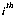

Table of Contents
Table of Contents
 Previous Chapter
Previous Chapter
Table of Contents
Previous Chapter
A graphics widget is a widget that can have several pixmaps associated with it. These additional pixmaps are used to store extra frames of data in memory, along with the one frame which is being displayed. The pixmaps are created in shared memory if possible so that the data can be accessed directly, i. e. without using Xlib routines.
Modules wishing to use a graphics widget should include the following line:
# include <GraphicsW.h>
A graphics widget is created, destroyed and otherwise manipulated the same as any other widget, by using X Toolkit routines. To use the X Toolkit the following lines should be included at the head of the file:
# include <X11/X.h> # include <X11/Intrinsic.h>
The process of creating a graphics widget consists of initializing the X Toolkit, creating a popup shell to hold the graphics widget, creating the graphics widget itself, and displaying the graphics widget on the screen.
A module that wishes to create a graphics widget should have these additional lines at the head of the file:
# include <X11/Shell.h> # include <X11/StringDefs.h>
A graphics widget can be created by making the following calls to X Toolkit routines:
(The graphics widget will automatically be realized if its parent has been realized.)
For example:
Widget Top, GrShell, Graphics;
XtAppContext Actx;
Top = XtAppInitialize (&Actx, "top", NULL, 0, &argc,
&argv, NULL, NULL, 0);
GrShell = (XtCreatePopupShell ("grshell",
topLevelShellWidgetClass, Top, NULL, 0);
Graphics = XtCreateManagedWidget ("graphics",
graphicsWidgetClass, GrShell, NULL, 0):
XtRealizeWidget (Graphics);
XtSetArg() and XtSetValues() are X Toolkit routines that are used to set the value of a particular resource which is associated with a widget. The following table lists the resources used by a graphics widget.
The following section of code would set the number of pixmaps in a graphics widget to two:
Arg args[1]; int FrameCount = 2; XtSetArg (args[0], XtNframeCount, FrameCount); XtSetValues (Graphics, args, 1);
Where Graphics is a graphics widget.
Finally, a graphics widget can be destroyed with a call to XtDestroyWidget(). For example:
XtDestroyWidget (Graphics);
Where Graphics is a graphics widget.
When a graphics widget is destroyed the shared memory segments for the shared memory pixmaps are detached.
Several convenience routines have been provided so that information can be accessed and operations can be performed on a graphics widget without having to know the internal representation of the widget. These routines follow.
These routines return information about the graphics widget such as its dimensions or its graphics context.
GWWidth() returns the width in pixels of a graphics widget's pixmaps.
int GWWidth (w) GraphicsWidget w;
GWHeight() returns the height in pixels of a graphics widget's pixmaps.
int GWHeight (w) GraphicsWidget w;
GWDepth() returns the depth in bits of a graphics widget's pixmaps.
int GWDepth (w) GraphicsWidget w;
GWGetGC() returns the graphics context currently being used by a graphics widget.
GC GWGetGC (w) GraphicsWidget w;
These routines either perform an operation on a particular pixmap associated with a graphics widget, or they return a pixmap so that it can be accessed outside of the graphics widget.
GWFrame() returns the Pixmap of the frame which is currently available for drawing.
Pixmap GWFrame (w) GraphicsWidget w;
This routine can be used to return the Drawable to be passed to certain Xlib routines such as XDrawPoint().
XDrawPoint (display, drawable, gc, x, y) Display *display; Drawable drawable; GC gc; int x, y;
For example:
XDrawPoint (XtDisplay (Graphics), GWFrame (Graphics),
GWGetGC (Graphics), 100, 100);
Where Graphics is a graphics widget.
GWGetFrame() returns the Pixmap associated with the graphics widget w.
Pixmap GWGetFrame (w, i) GraphicsWidget w; int i;
GWClearFrame() clears the  pixmap by filling it with the background color. If i is equal to ClearAll then all pixmaps are cleared.
void GWClearFrame (w, i) GraphicsWidget w; int i;
GWDrawInFrame() sets the current frame available for drawing to the pixmap.
void GWDrawInFrame (w, i) GraphicsWidget w; int i;
GWDisplayFrame() sets the pixmap to be the currently displayed frame.
void GWDisplayFrame (w, i) GraphicsWidget w; int i;
The following example shows how one frame can be drawn and displayed, and then how a new frame can be selected for drawing:
int DrawFrame = 0;
/*
* Pixmap 0 is set to be the current draw frame, is cleared
* and drawn into.
*/
GWDrawInFrame (Graphics, DrawFrame);
GWClearFrame (Graphics, DrawFrame);
XDrawPoint (XtDisplay (Graphics), GWFrame (Graphics),
GWGetGC (Graphics), 100, 100);
/*
* Pixmap 0 is displayed.
*/
GWDisplayFrame (Graphics, DrawFrame++);
/*
* The next pixmap is set to be the current draw frame, is cleared
* and drawn into.
*/
DrawFrame %= FrameCount;
GWDrawInFrame (Graphics, DrawFrame);
GWClearFrame (Graphics, DrawFrame);
XDrawPoint (XtDisplay (Graphics), GWFrame (Graphics),
GWGetGC (Graphics), 101, 101);
Where Graphics is a graphics widget and FrameCount is the number of pixmaps associated with that graphics widget.
The following routines are provided for dealing with pixmaps in shared memory.
GWShmPossible() returns TRUE if the X server supports the shared memory extension (XShm) and the server and client are running on the same host.
int GWShmPossible (w) GraphicsWidget w;
However, even if shared memory is reported as possible, shared memory pixmaps may still not succeed. For example, some UNIX kernels are not capable of System V shared memory, and so any attempts to create shared memory segments will fail miserably. If a shared memory pixmap cannot be created, then the graphics widget resorts to ordinary pixmaps. To determine whether a pixmap was successfully created as shared, call GWFrameShared().
int GWFrameShared(w, p) GraphicsWidget w; int p;
This function returns TRUE only if the specified pixmap, p, is a shared memory pixmap. Any shared memory functions which operate on a specific pixmap should not be called without first making sure that the pixmap is actually shared. For example, given a graphics widget Graphics and pixmap i:
if (GWFrameShared (Graphics, i))
GWZapShmPixmap(Graphics, i);
GWGetBPL() returns the number of bytes per line associated with shared pixmap i of graphics widget w.
int GWGetBPL (w, i) GraphicsWidget w; int i;
GWGetFrameAddr() returns the memory address associated with the pixmap. This address can be used to access the data in the pixmap directly, i.e., without using Xlib routines.
char * GWGetFrameAddr (w, i) GraphicsWidget w; int i;
For example the contents of pixmap 0 of graphics widget Graphics can be saved in a file:
int fp;
if (GWShmPossible (Graphics) && GWFrameShared (Graphics, 0))
fp = open ("PixmapFile", O_WRONLY);
write (fp, GWGetFrameAddr (Graphics, 0),
GWGetBPL (Graphics, 0) * GWHeight (Graphics));
GWZapShmPixmap() removes the shared memory pixmap by detaching and freeing the shared memory segment.
void GWZapShmPixmap (w, i) GraphicsWidget w; int i;
If a process is exiting, it should release all of its shared memory segments as follows:
int i;
if (GWShmPossible (Graphics))
for (i = 0; i < FrameCount; i++)
{
if (GWFrameShared (Graphics, i)
GWZapShmPixmap (Graphics, i);
}
This releases any system resources tied up by the shared memory pixmaps which would otherwise not be released when the process exits. Graphics is a graphics widget and FrameCount is the number of pixmaps associated with that graphics widget.
 Next Chapter
Next Chapter